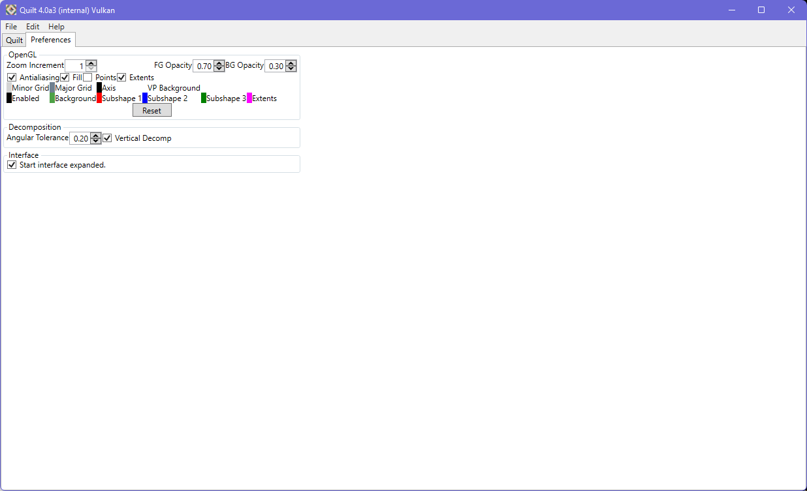

Quilt has a number of persistent preferences that can be set on the preferences tab..

The color and appearance of elements within the viewport can be configured here. These settings are not stored in the project file, but are retained in a tool preference file and are applied across sessions.
With 'Extents' checked, the pattern extent is drawn into the viewport. This will help to understand how patterns are being placed. The extents are purely viewport-related and are not exported into layout (the extents are recorded in the CSV file used for Variance DOE configuration, however).
|
|
The background color is used when 'input' is deselected. It is applied to geometry that isn't defined by the currently-selected element.
The angular tolerance value is used internally during colinear vertex removal, as a margin around the 180 degree angle that would denote a colinear edge segment.
The vertical decomp option is used to choose the orientation of rectangles created during layout decomposition.